小红书情感咨询账号全链路运营（一人操盘）
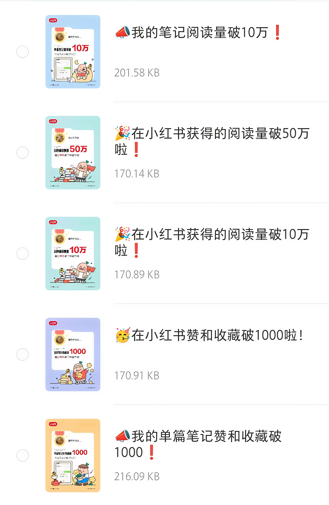
01 账号定位与选题策略：市场导向与流量卡位
1. 市场切入：从流量大盘寻找供需缺口
通过检索小红书标签浏览量（#恋爱 612.5亿、#星座分析 54.8亿、#摩羯座 38.8亿），结合下拉搜索词，我发现“星座+情感咨询”市场存在巨大的信息差与情绪需求。用户不仅需要星座性格解读，更渴望获得具体的、能解决现实情感痛点的方案（有较强付费意愿）。
差异化定位：放弃泛泛的性格科普，建立“懂星座的情感军师”人设，直接提供情绪价值与解决思路，完成A端获客布局。
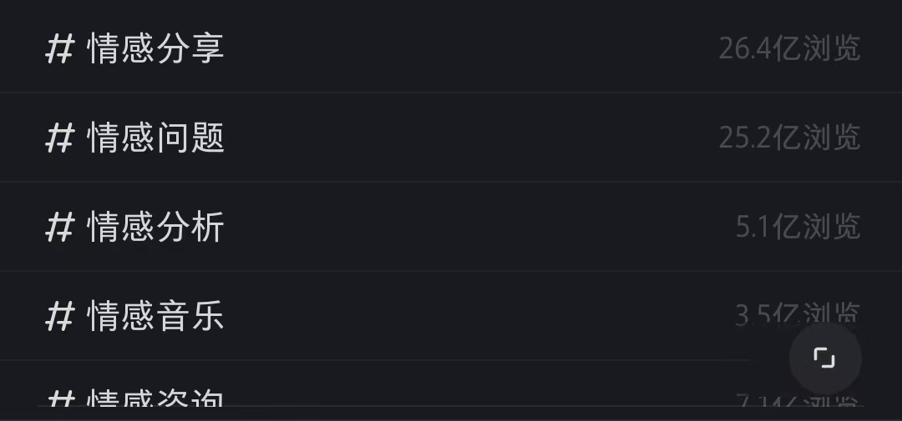
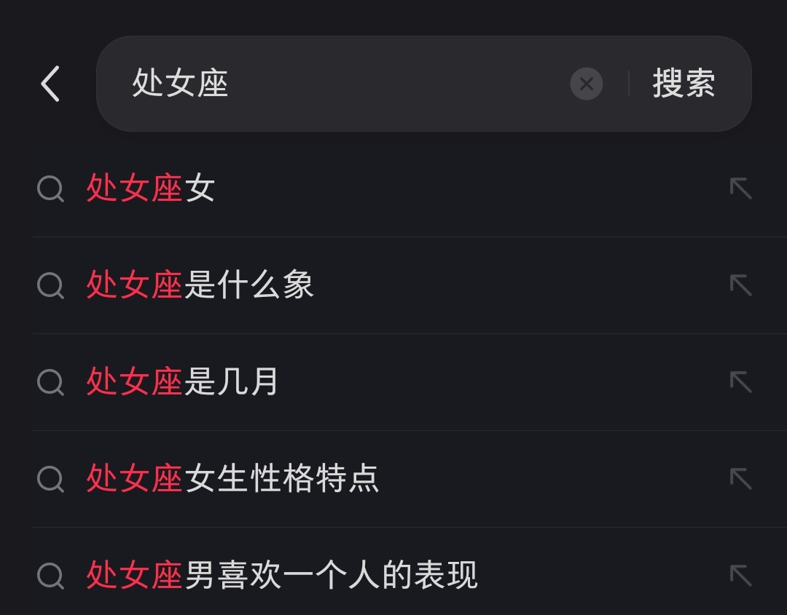
2. 选题逻辑：拆解竞品痛点，狙击搜索词条
对比竞品爆文后，我提炼出“XX座专贴：随便问，真的回”的选题模型。封面采用极简大字报，强化星座关键词（如“处女座 随便问 真的回”），直击用户情感倾诉时“怕没有回应”的痛点，大幅降低评论门槛。同时，精准铺设#星座情感 #恋爱军师 #crush 等标签，成功让内容进入用户主动搜索的话题词条，实现搜索流量的精准承接。
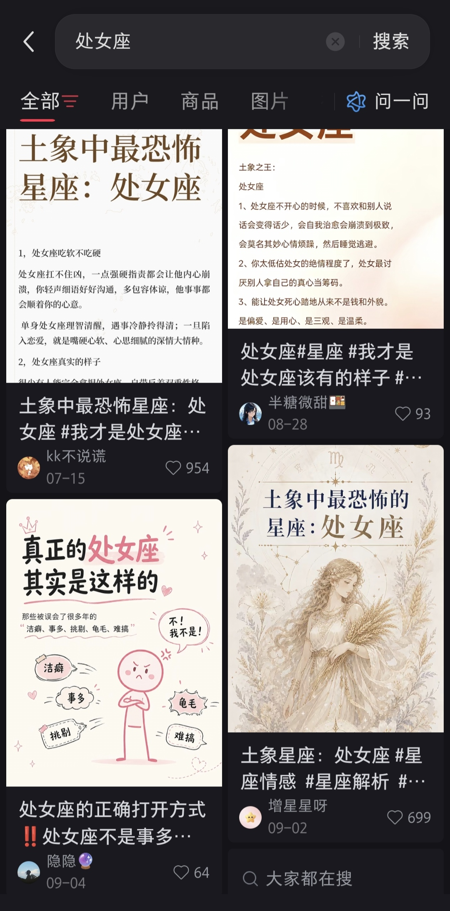
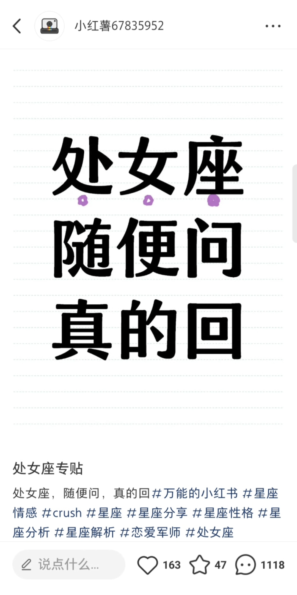
02 笔记数据复盘：算法拆解与爆款迭代
1. 初期试错，发现互动率才是核心引擎
初期常规性格分析（如《摩羯座有多能憋？》）虽有千次阅读，但互动率极低，未能触发算法推流。
复盘后我迅速调整，9月下旬发布《处女座军师，在线答疑解惑》，阅读量4653，评论数飙升至361。这让我意识到：互动率（点赞+评论）/阅读量，是衡量笔记质量的核心指标。行业平均互动率通常在2%-3%，优质笔记需高于5%，10%以上具备爆文潜力。结合本账号商业模式，高评论量不仅能触发系统的滚雪球式推流，更直接代表着大量高意向获客线索，是流量与变现双重维度的生死线。
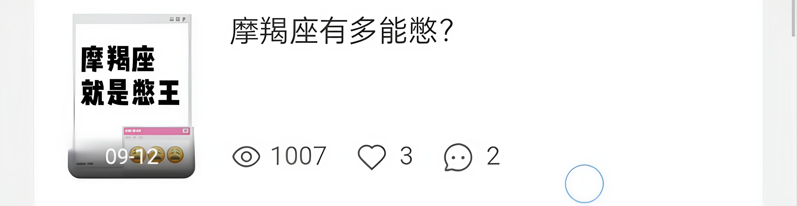
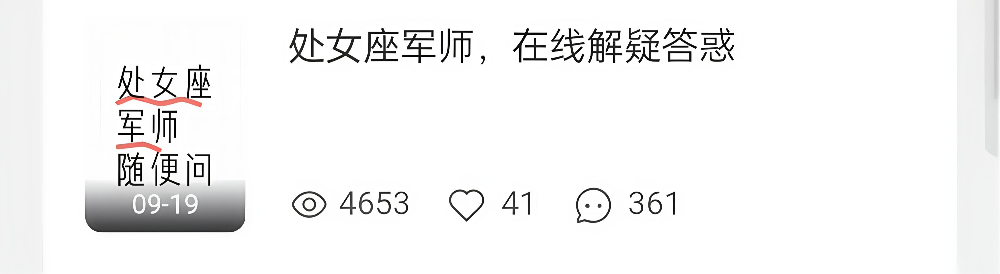
2. 固化模板，跑通十万级爆款
确立“专贴答疑”方向后，进行规模化复制：
- 10月上旬发布摩羯、处女专贴，阅读量攀升至1-3万，单篇评论达1637，赞藏破千，互动率远超10%；
- 持续优化封面与关键词后，最终跑出单篇阅读量破10万+的爆款，彻底突破账号流量层级；
- 12月复刻该模板，依然稳定获取万级阅读与千级评论，验证了该内容模型极强的长期可复制性与流量爆发力。
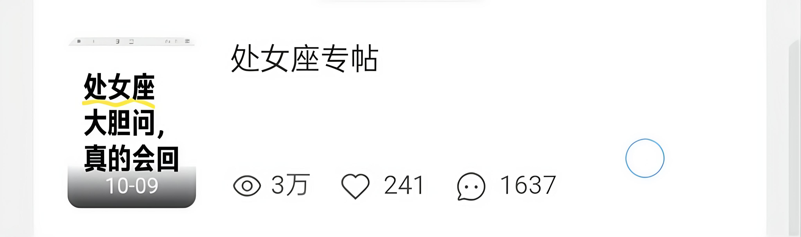
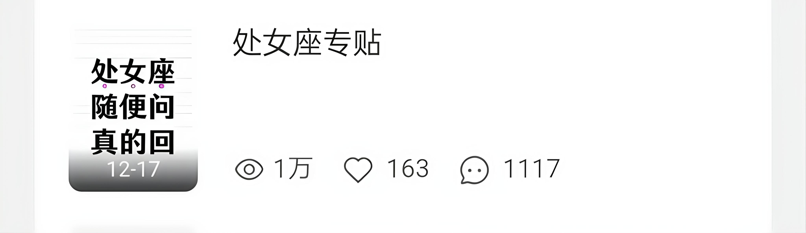
3. 数据跃升与流量来源拆解
近30天数据，环比上一周期（即对比上一个30天，11.12-12.11），数据全面爆发：
- 观看量达33187（环比+370%），实现了近4倍的流量增长；
- 互动数达2081（环比+1168%），高密度评论持续触发算法推荐机制。
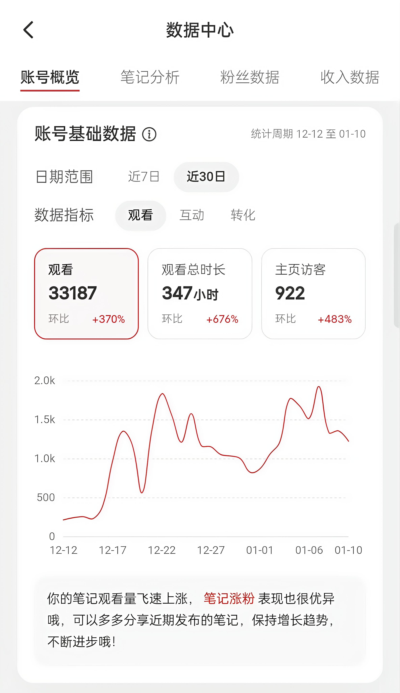
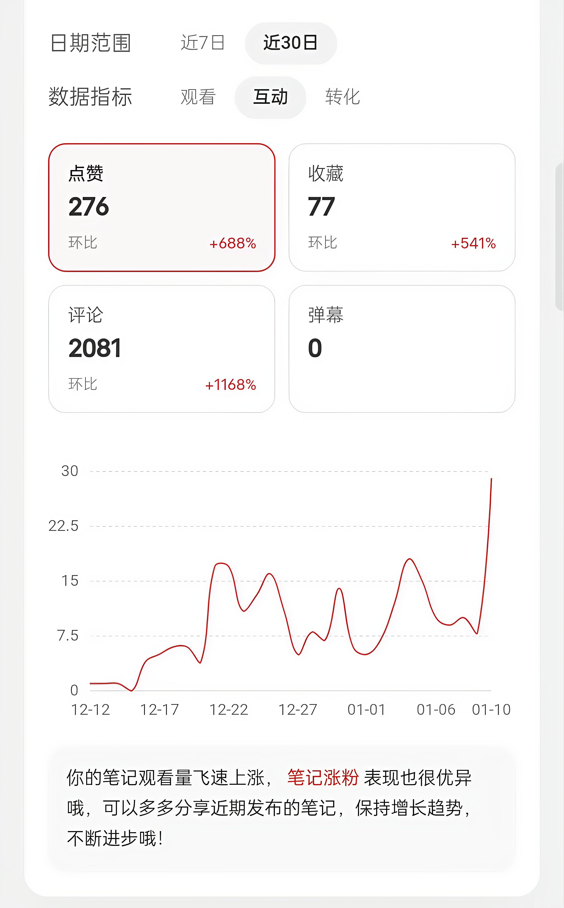
流量来源拆解（核心逻辑）：
- 首页推荐占比80%：这说明帖子互动数据极好、热度高，选题响应速度极快，能够在短时间内迎合平台算法趋势，成功打入高流量池；
- 搜索流量占比16%：这说明我的选题内容成功进入特定话题词条，符合相关热点的搜索词条，被系统识别为优质答案。这为我带来了极低竞争的长尾流量，确保了账号流量的稳定性。
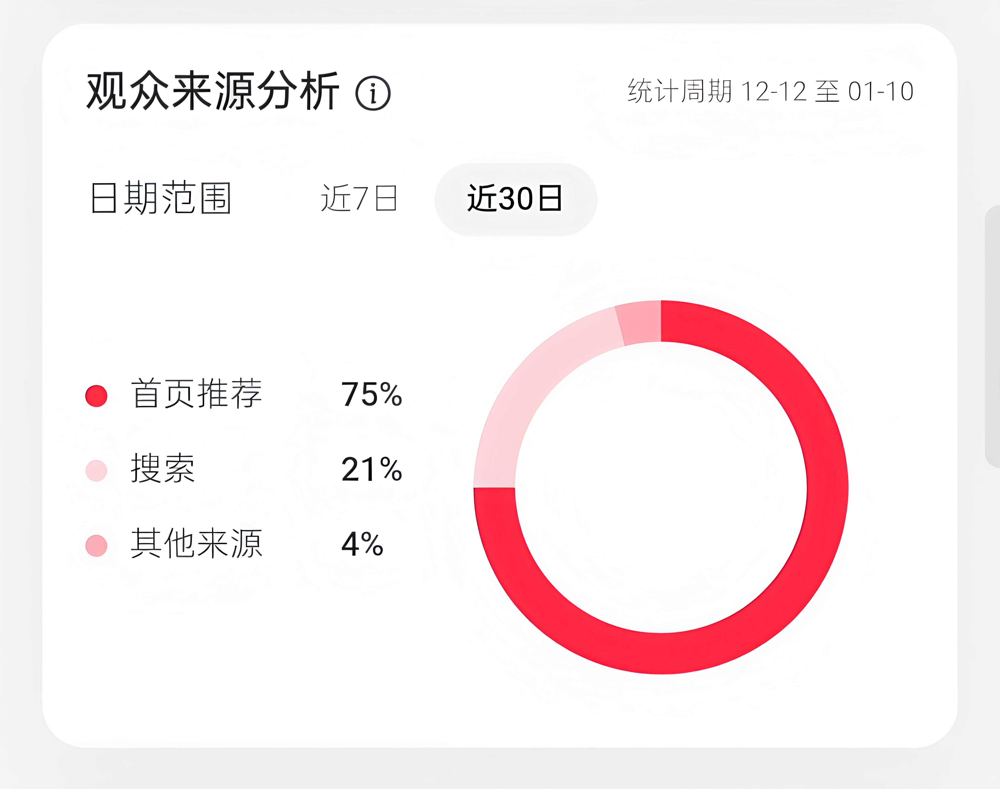
主页访客近30天达922人（环比+483%），公域看客高效转化为粉丝，完成流量蓄水。
03 私域转化与商业闭环：从流量到付费咨询
1. 公域引流：评论区信任铺垫
在爆款笔记评论区，面对大量异地恋、crush、分手挽回等私密倾诉，通过高频的“军师式”回复提供简单建议，快速建立专业信任感。同时，通过话术（如“你的情况比较复杂，具体看私信”），将评论区的泛流量精准导流至后台。
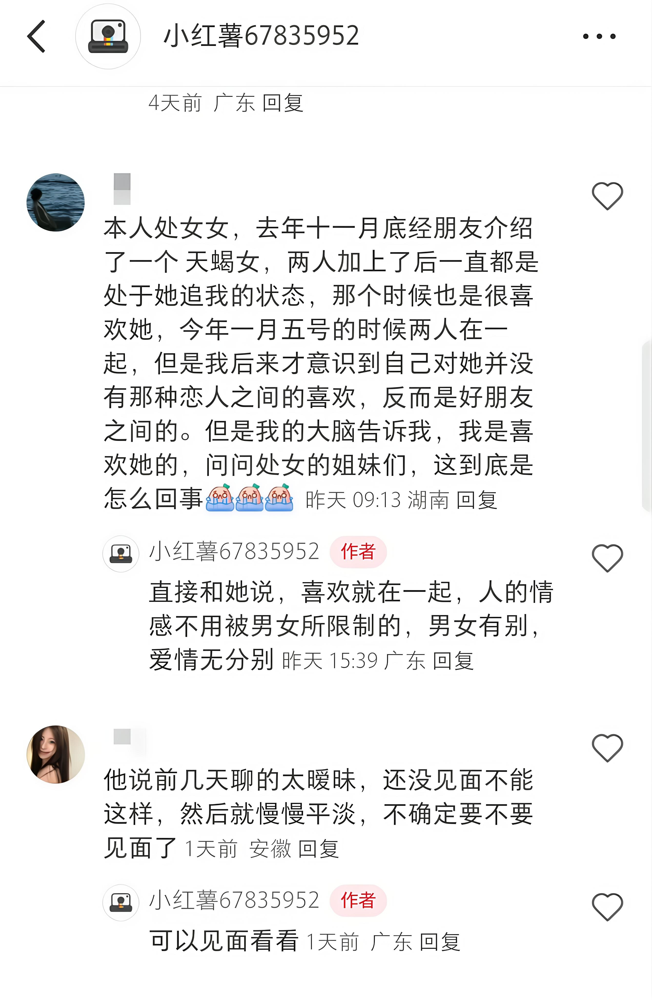
2. 私域促单：价值锚定与需求筛选
私信环节采用亲切的称呼（“宝宝”）破冰，在免费给出简单建议后，明确服务边界：“简单问题免费答，详细咨询有偿”。通过“宝宝是想解决矛盾吗？”等提问，精准筛选高意向用户，顺理成章完成B端促单。
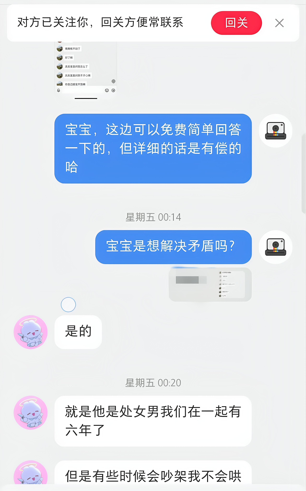
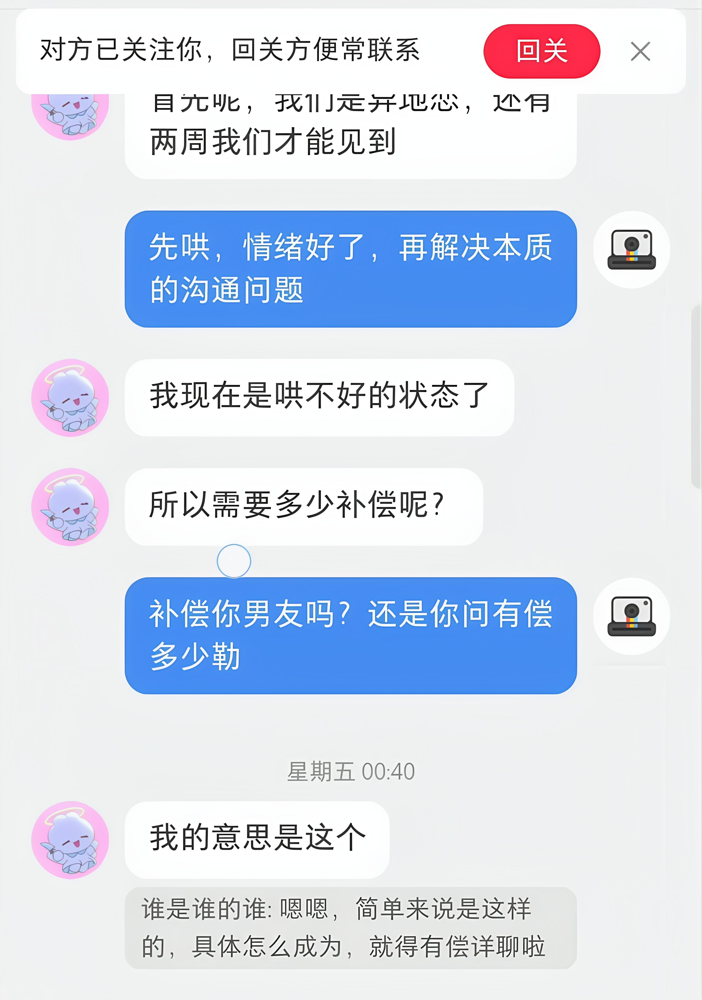
3. 1v1交付：深化信任与口碑
针对付费用户，提供深度情感分析与可落地的沟通方案，交付实用价值与情绪价值。高满意度的交付赢得了客户的深度认可（如用户反馈“和你聊天帮助我心态变稳很多”），并收到红包与转账反馈，形成了“信任-交付-复购”的正向循环。一人独立完成了从流量获取、转化促单到咨询交付的全链路商业闭环。
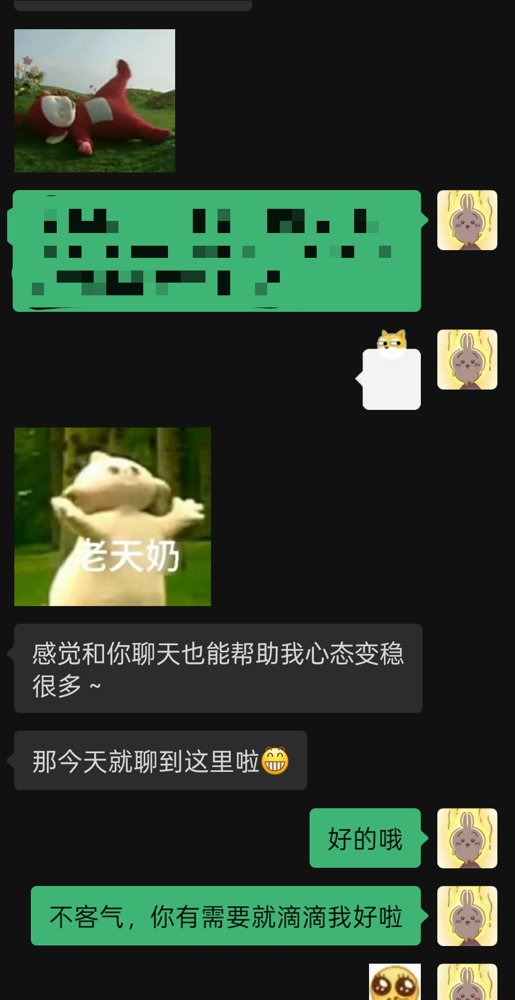
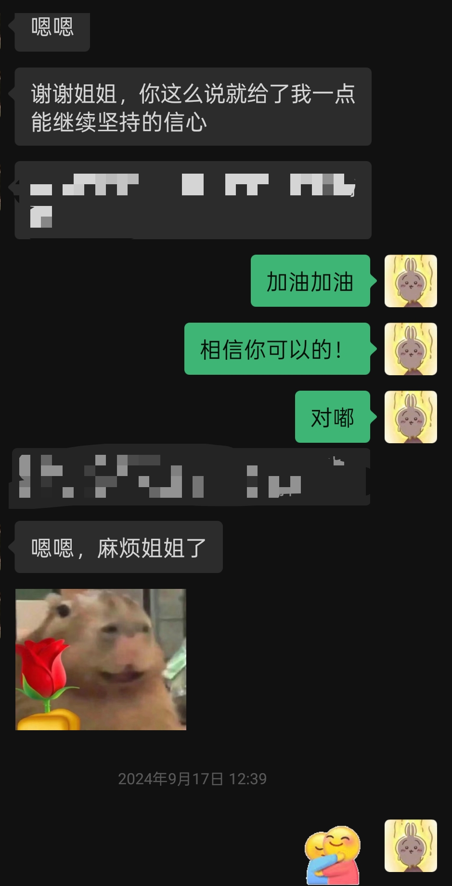
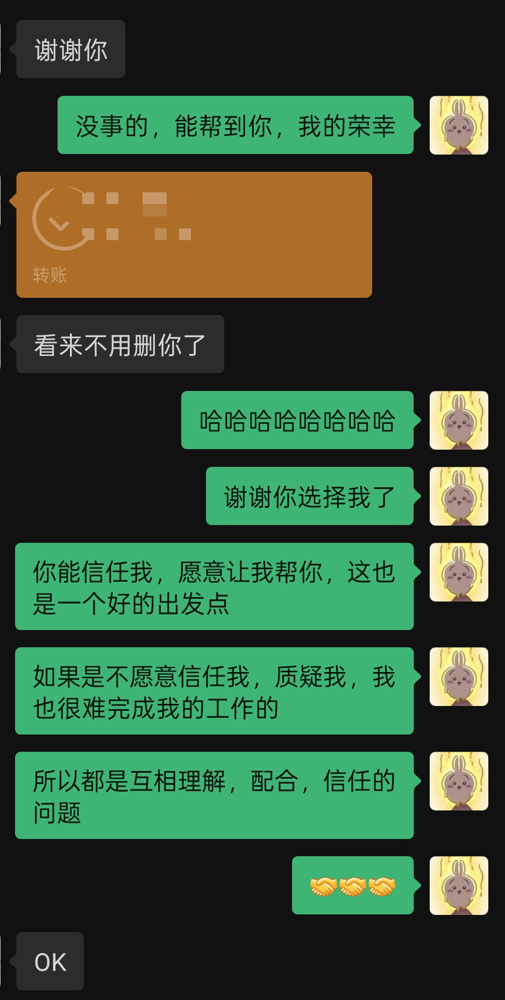
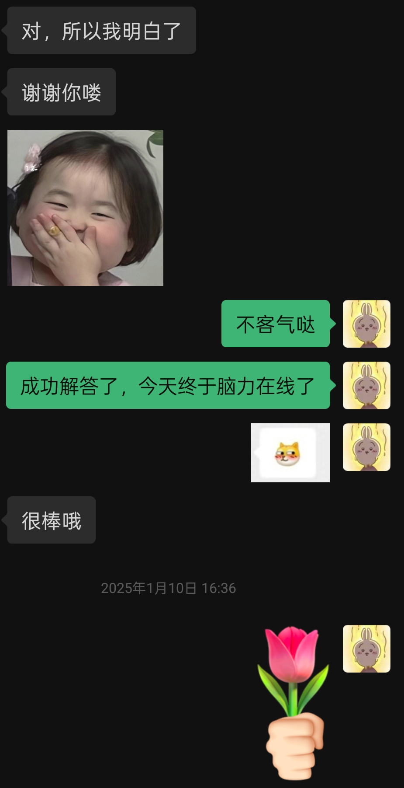
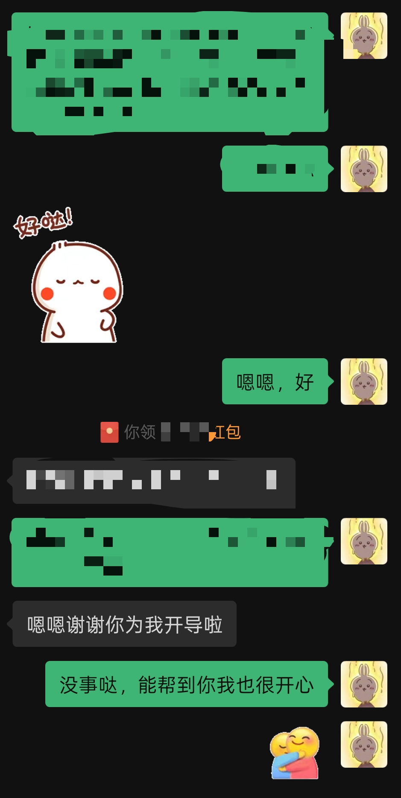